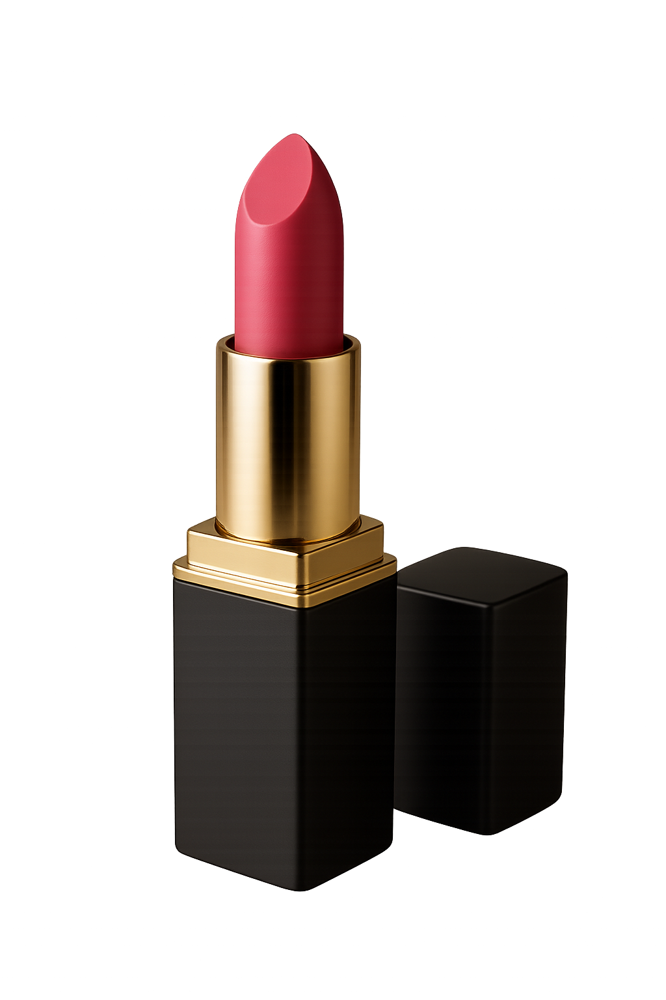

<div>
  

  <!-- ⬇️ 이미지 바로 아래 도킹되는 광고 블록 -->
  <div class="ad" id="ad">
    <div class="ad__bg--back"><div class="fill"></div></div>

    <div class="ad__front" id="front">
      <div class="ad__front-clip" id="frontClip">
        <div class="fill"></div>
        
        <div class="ad__circle" id="circle"></div>
        <div class="ad__text" id="text">
          <span><span class="blink">빛나는 순간, </span>나의 컬러</span>
        </div>
      </div>

      <!-- 상품은 클립 바깥 → 위로 넘쳐도 보임 (위로는 계속 보이고) -->
      
    </div>
  </div>
</div>

<style>
  :root {
    --h: 60px; /* 뒷배경 높이 */
    --ad-h: 80px; /* 앞배경 높이 */
    --front-overlap: 20px; /* ✅ 앞배경이 이미지 하단을 겹치는 정도(px) */

    --bg-back: #121212;
    --bg-front: #2c2a2a;
    --txt: #fff;
    --logo-size: 50px;
    --product-w: 96px;
    --product-h: 140px;
    --circle-size: 120px;
  }

  * {
    box-sizing: border-box;
  }

  /* ✅ 이미지 바로 아래에 도킹 */
  .ad {
    position: relative;
    display: block;
    width: auto; /* JS가 실제 픽셀 폭으로 세팅 */
    margin-left: 0; /* JS가 좌측 오프셋으로 세팅 */
    height: var(--h);
    container-type: inline-size;
    overflow: visible;
  }

  /* 뒷배경: 이미지 바로 '아래'에 나타남(겹치지 않음) */
  .ad__bg--back {
    position: absolute;
    left: 0;
    right: 0;
    bottom: 0;
    height: var(--h);
    overflow: hidden;
    z-index: 5; /* 이미지(z:10)보다 아래 */
  }
  .ad__bg--back .fill {
    position: absolute;
    inset: 0;
    background: var(--bg-back);
    transform-origin: bottom;
    transform: scaleY(0);
  }

  /* 앞배경: 이미지 하단을 '살짝' 겹치도록 위로 올림 */
  .ad__front {
    --front-w: 600px;
    position: absolute;
    left: 50%;
    bottom: 0;
    width: var(--front-w);
    height: calc(var(--ad-h) + 50px);
    transform: translateX(-50%);
    overflow: hidden;
    z-index: 20;
    isolation: isolate; /* ✅ 이미지(z:10)보다 위 */
    opacity: 0;
  }
  @container (max-width: 599.98px) {
    .ad__front {
      --front-w: 330px;
    }

    /* 600 → 330으로 줄어드는 비율: 0.55 */
    .ad__logo {
      width: calc(64px * 0.75) !important;
      height: calc(64px * 0.75) !important;
    }
    .ad__circle {
      width: calc(120px * 0.85) !important;
      height: calc(120px * 0.85) !important;
    }

    /* 상품도 동일 비율로 축소 */
    .ad__product {
      width: calc(110px * 0.85) !important;
      height: calc(152px * 0.85) !important;
    }

    /* 텍스트도 과하게 크지 않게 조정 */
    .ad__text {
      font-size: clamp(16px, 3.2vw, 17px);
      line-height: 1.15;
    }
  }

  /* 앞배경 내부는 클리핑 */
  .ad__front-clip {
    position: absolute;
    width: 100%;
    bottom: 0;
    height: var(--ad-h);
    overflow: hidden;
    z-index: 1;
  }
  .ad__front-clip .fill {
    position: absolute;
    bottom: 0;
    width: 100%;
    height: 100%;
    background: var(--bg-front);
    transform-origin: bottom;
    transform: scaleY(0);
    box-shadow: 0 6px 18px rgba(0, 0, 0, 0.08);
  }

  /* 요소들 (좌표는 GSAP이 제어) */
  .ad__logo {
    position: absolute;
    top: 50%;
    left: 50%;
    width: var(--logo-size);
    height: var(--logo-size);
    object-fit: contain;
    opacity: 0;
    z-index: 21;
    filter: drop-shadow(0 2px 6px rgba(0, 0, 0, 0.15));
  }
  .ad__circle {
    position: absolute;
    top: 50%;
    right: 0;
    width: var(--circle-size);
    height: var(--circle-size);
    border-radius: 50%;
    background: #f3eae0;
    backdrop-filter: blur(2px);
    opacity: 0;
    z-index: 19;
  }
  .ad__text {
    position: absolute;
    left: 50%;
    top: 50%;
    width: min(60%, 360px);
    text-align: center;
    color: var(--txt);
    font-weight: 700;
    letter-spacing: -0.2px;
    opacity: 0;
    z-index: 21;
    margin: 0 !important;
  }
  .ad__product {
    position: absolute;
    right: -7px;
    bottom: -20px;
    width: var(--product-w);
    height: var(--product-h);
    object-fit: contain;
    z-index: 22;
    filter: drop-shadow(0 6px 14px rgba(0, 0, 0, 0.18));
  }
  .blink {
    color: #ffb907 !important;
    will-change: opacity;
  }
</style>

<!-- GSAP -->
<script src="https://cdn.jsdelivr.net/npm/gsap@3.12.5/dist/gsap.min.js"></script>
<script>
  (function () {
    const reduce = matchMedia && matchMedia('(prefers-reduced-motion: reduce)').matches;

    const T = reduce
      ? {
          back: 0,
          front: 0,
          logoUp: 0,
          logoSlide: 0,
          circle: 0,
          productIn: 0,
          productUp1: 0,
          productUp2: 0,
          text: 0,
        }
      : {
          back: 0.8,
          front: 0.7,
          logoUp: 0.6,
          logoSlide: 0.6,
          circle: 0.6,
          productIn: 0.35,
          productUp1: 0.35,
          productUp2: 0.21,
          text: 0.6,
        };

    const ad = document.getElementById('ad');
    const front = document.getElementById('front');
    /* 반응형 폭 고정(600 / 330) */
    const setFrontW = () => {
      front.style.setProperty('--front-w', ad.clientWidth >= 600 ? '600px' : '330px');
    };
    setFrontW();
    const anchorImg =
      ad?.previousElementSibling?.tagName === 'IMG' ? ad.previousElementSibling : null;

    const syncAdToImg = () => {
      if (!anchorImg) return;
      const imgRect = anchorImg.getBoundingClientRect();
      const parentRect = ad.parentElement.getBoundingClientRect();

      // 이미지 폭과 좌측 위치를 .ad에 반영
      ad.style.width = imgRect.width + 'px';
      ad.style.marginLeft = imgRect.left - parentRect.left + 'px';

      // .ad 폭이 바뀌면 내부 컨테이너 쿼리 기반 계산도 갱신
      setFrontW();
    };

    // 최초/로드/리사이즈/크기변화에 모두 대응
    if (anchorImg) {
      if (anchorImg.complete) syncAdToImg();
      anchorImg.addEventListener('load', syncAdToImg);
      window.addEventListener('resize', syncAdToImg);
      try {
        new ResizeObserver(syncAdToImg).observe(anchorImg);
      } catch (e) {
        // Safari 등 일부 환경에서 지원 안 하면 무시
      }
    }
    addEventListener('resize', setFrontW);

    /* 초기 상태 */
    gsap.set('.ad__bg--back .fill', {
      scaleY: 0,
      transformOrigin: 'bottom',
    });
    gsap.set('.ad__front', { autoAlpha: 0 });
    gsap.set('#frontClip .fill', { scaleY: 0, transformOrigin: 'bottom' });

    gsap.set('#logo', { xPercent: -50, yPercent: -50, y: 40, opacity: 0 });
    gsap.set('#circle', {
      xPercent: 22,
      yPercent: -20,
      x: 140,
      opacity: 0,
    });
    gsap.set('#text', { xPercent: -50, yPercent: -30, opacity: 0 });
    gsap.set('#product', { yPercent: 120, autoAlpha: 0 }); // 처음엔 숨김 + 아래

    const tl = gsap.timeline({ defaults: { ease: 'power1.out' } });

    // 1) 뒷배경(이미지 바로 아래)
    tl.to('.ad__bg--back .fill', { scaleY: 1, duration: T.back }, 0);

    // 2) 앞배경: 뒷배경 끝난 후 등장 + 채움(이미지 하단 겹침)
    tl.set('#front', { autoAlpha: 1 }, '>');
    tl.to('#frontClip .fill', { scaleY: 1, duration: T.front }, '<');

    // 3) 로고 등장 → 왼쪽 20px
    tl.to('#logo', { opacity: 1, y: 0, duration: T.logoUp, ease: 'power2.out' }, '<');
    tl.to(
      '#logo',
      {
        xPercent: 0,
        left: 16,
        duration: T.logoSlide,
        ease: 'power2.inOut',
      },
      '>'
    );

    // 4) 서클 착지
    tl.to('#circle', { x: 0, opacity: 1, duration: T.circle, ease: 'power2.out' }, '>');

    // 5) 상품: 아래에서 안 보이다가 → 앞배경 하단 도달 시 보이기 → 콕 → 자리
    tl.to('#product', { yPercent: 0, duration: T.productIn, ease: 'power3.out' }, '>'); // 아직 숨김
    tl.set('#product', { autoAlpha: 1 }, '>');
    tl.to('#product', { y: -16, duration: 0.18, ease: 'power2.out' }, '>'); // 콕(오버슈트) -16px
    tl.to('#product', { y: 0, duration: 0.28, ease: 'back.out(2)' }, '>'); // 자리잡기

    // 6) 텍스트 등장
    tl.to('#text', { opacity: 1, yPercent: -50, duration: T.text, ease: 'power2.out' }, '>');

    // 7) '빛나는 순간' 깜빡임
    tl.add(() => {
      if (reduce) {
        gsap.set('.blink', { opacity: 1 });
        return;
      }
      gsap.to('.blink', {
        opacity: 0,
        duration: 1.1,
        ease: 'power1.inOut',
        repeat: -1,
        yoyo: true,
      });
    }, '>');
  })();
</script>
